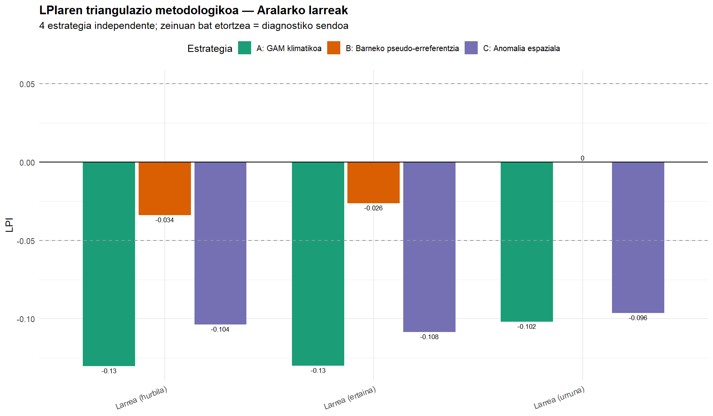
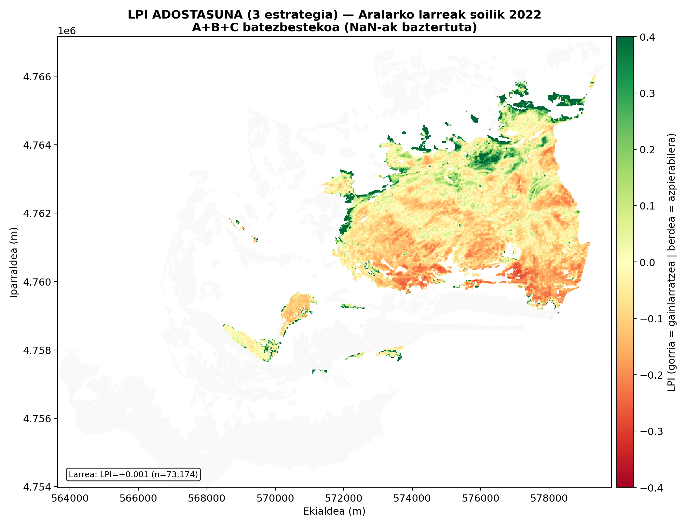

Proiektua begirada batean
Aralarko mendi-pean atlantikoko larreen LAI eskasaren zenbat da abeltzaintzari egotzgarria eta zenbat klimari? GrAL honek larre-diagnostikorako sistema bat eraikitzen du, PROSAILekin alderantzikatutako Sentinel-2 serieak, GAM bidezko klima-modelizazioa eta LPIaren lau estrategia erabiliz, diagnostiko sendoa lortzeko triangulatzen direnak.
ES2120011 KBE Aralarko Natur Parkean 2018tik 2025era aplikatuta, sistemak larre-presioaren ia bi urteko eredu bat agerian uzten du: krisia 2020, 2022 eta 2025ean, 2023ko lasaitzearekin txandakatuta.
Triangulazio bidezko metodologia
Diagnostikoa metodologikoki independenteak diren lau estrategia konbinatuz eraikitzen da. Bakoitzak galdera berari erantzuten dio ikuspegi desberdin batetik, eta haien arteko zeinu-bateragarritasuna da sendotasunaren irizpide operatiboa.
A · Klima-GAM
AOIaren LAI agregatuaren gainean doitutako G6 eredua. Hondarra (behatua − iragarria) da larre-seinalea.
B · Pseudo-erreferentzia
Larre urruneko guneekin soilik entrenatutako eredua (gutxien larratzen den barneko erreferentzia). Erreferentzia horrekiko anomalia.
C · Anomalia espaziala
AOIaren medianarekin alderatzea data bakoitzean. Ez du eredurik ez erreferentziarik behar, argazki bat.
D · Pagadi-erreferentzia
Pagadia klima-termometro gisa. Anomalia-aldea urte anitzeko fenologia propioekiko.

LPIaren laukoitz triangulazioa: estrategia bakoitzak besteen muga betetzen du. Zeinu-bateragarritasuna da sendotasun-irizpidea.
Larre-mapen galeria
12 produktu kartografiko urteko, 2018-2025 seriearentzat. Hautatu urtea eta produktua dagokion mapa ikusteko.

Emaitzen sintesi grafikoa
Biltegiko figures/ karpetaren edukitik automatikoki sortutako galeria osoa. Gehitzen den irudi berri bakoitza hemen agertzen da orria ukitu gabe.
Irudiak kargatzen…
Proiektuaren dokumentuak
Biltegiko docs/ karpetaren edukitik automatikoki sortutako zerrenda. Fitxategi berri bat gehitzen den bakoitzean hemen agertuko da orria ukitu gabe.
Dokumentuak kargatzen…
Biltegia eta erreproduzigarritasuna
Pipeline-aren iturburu-kode osoa GitHuben dago eskuragarri, Creative Commons BY-NC-ND 4.0 lizentziapean. Horrek lanaren kontsulta, aipamena eta erreprodukzioa ahalbidetzen du, baina ez erabilera komertziala ezta eratorritako bertsio aldatuen banaketa ere.
📦 github.com/Moxkix/ARALAR_TFG
scripts/python/— PROSAIL inbertsio lokala + NN entrenamendua + kartografiascripts/javascript/— GEE pipeline osoascripts/R/— Klima-modelizazioa eta laukoitz diagnostikoadata/— Pipeline-aren irteerako CSVakmaps/— Urteko larre-kartografia (2018-2025 seriea, 12 produktu × 8 urte)figures/— Diagnostikoaren sintesi-irudiakdocs/— Proiektuaren dokumentazioa (weben automatikoki zerrendatua)
Aipamen iradokia
[Abizena, Izena] (2026). Aralarko Natur Parkeko larre-diagnostikoa teledetekzioz eta klima-modelizazioz. Gradu Amaierako Lana, Geografia eta Lurralde Antolakuntzako Gradua, Euskal Herriko Unibertsitatea / Universidad del País Vasco. https://github.com/Moxkix/ARALAR_TFG